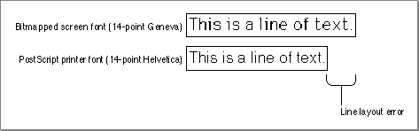
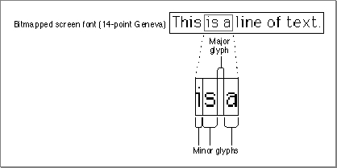
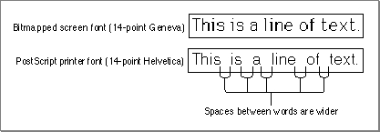
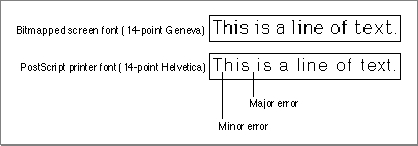
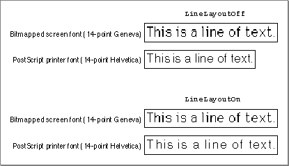
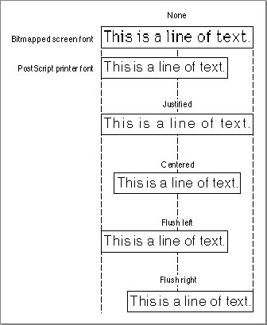

Legacy Document
Important: The information in this document is obsolete and should not be used for new development.
Important: The information in this document is obsolete and should not be used for new development.


Using Text Picture Comments
The text picture comments listed in Table B-1 on page B-8 allow you to disable the printer driver's line layout capabilities (as described in the next section), construct lines of text out of disparate strings (as described in "Delimiting Strings" on page B-19), and rotate text on the page (as described in "Rotating Text" on page B-20).For information on drawing text, see Inside Macintosh: Text.
Disabling and Reenabling Line Layout
When your application draws text into a printing graphics port, the printer driver may do a lot of extra work depending on the current printer; the printer driver may have to scale and smooth fonts, remap characters, and substitute one font used onscreen for another that exists on the printer (this last action is called font substitution).After it selects the appropriate font, the printer driver matches the width of the printed line with the width of the screen line. If the driver has to perform font substitution, the two lines may be very different. For example, if your application draws a document with the Geneva bitmapped font (instead of the Geneva TrueType font), a PostScript printer driver could substitute the Helvetica
\xC6 font for Geneva in the PostScript code it generates. Since Helvetica is a different font, it has different metrics. A rather exaggerated example of the effects of font substitution can be found in Figure B-1. Figure B-1 The line layout error between a bitmapped font and a PostScript font

For the typical user, the appearance of Helvetica on the printed page is not that much different from the appearance of Geneva on the screen. However, the width of the lines using the two fonts is different; this difference is called the line layout error. The line of text using the bitmapped screen font is much wider than the line of text using the PostScript printer font. (Depending on the font used in the document or substituted on the printer, you might also run into cases where the screen width is narrower than the printed width.)
To distribute the layout error, a printer driver must effectively increase or decrease the width of each glyph in the line. A glyph is the distinct representation of a character in a form that a screen or printer can display. A glyph may represent one character (the lowercase a), more than one character (the fi ligature, two characters but one glyph), or a nonprinting character (the space character). When using Roman scripts, most lines of text contain some number of space character glyphs. Printer drivers take advantage of this fact and normally apply most of the layout error to space glyphs (known as the major glyphs) and the rest of the error to the other glyphs in the string (known as the minor glyphs).
- Note
- There are no line layout problems with TrueType fonts, unless one font has the same name as--but a different character width from--a printer-resident PostScript font.

In Figure B-2, the i, s, and a characters are examples of minor glyphs, where s and a are separated by the major glyph (the space character).
Figure B-2 Major and minor glyphs

The amount of error applied to the major glyph is known as the major error, and the amount applied to the other glyphs is the minor error.In Figure B-3, the printer driver corrects most of the difference between the line widths by expanding the width of the space glyphs in the string.
Figure B-3 Distributing layout error to the major glyphs

However, if the printer driver expands only the width of the spaces, the line has a strange appearance. To balance the changes made to the space glyphs, the driver's line layout routines increase the space between each glyph in the string by a small amount. After the line is laid out in this way, the printed string should be almost exactly as wide as the string that was displayed on the screen. As shown in Figure B-4, the space between the uppercase T and the lowercase h in the word This has been increased, but only slightly; most of the error has been applied to the spaces. By default, most drivers apply about 80 percent of the total line layout error to the major glyphs and the other 20 percent to the minor glyphs. When using a script system that does not use the space glyph to delimit words, the layout error is distributed evenly across all characters in the line.Figure B-4 Distributing layout error among major and minor glyphs

A printer driver's line layout routines are device-dependent. Since different devices have different resident fonts, the layout error can be quite large. For this reason, you should not assume that if you have the correct output on one type of laser printer you will have the correct output on all devices or with all fonts.Although the printer driver can compute the placement of a line of text on the page so that it closely approximates the placement of the line on the screen, there are times when adjusting the line of text by adding space can have an adverse effect on the line layout that your application has already done.
You can disable the line layout routines of the current printer driver and give your application more control over placement of the glyphs on the page by using the
LineLayoutOffpicture comment. You may want to use this picture comment if your application prints monospaced, tab-formatted text; draws notes or other music symbols using glyphs from a music font; or renders mathematical equations or formulas. For example, if your application displays musical notation, the notes should stay where your application placed them, because small shifts in position can cause the music to be misread.The
LineLayoutOffpicture comment instructs the printer driver to make no adjustments to the text being sent. Your application is then responsible for identically matching the appearance of text displayed on the screen to the printer. If the current printer driver does not support these comments, it ignores them and places the text on the page as well as it can.You can reenable the printer driver's line layout routines with the
LineLayoutOnpicture comment (however, some printer drivers support only theLineLayoutOffcomment). Although general line layout is disabled, some small shifts in glyph position may still occur. These shifts are usually not a problem, but, if they are, you should use thePrGeneralprocedure with thegetRslDataOpandsetRslOpopcodes (described in the chapter "Printing Manager" in this book) to draw text at the resolution of the current printer.
Figure B-5 compares the results of an application using the
- IMPORTANT
- Setting the
FractEnableglobal variable (described in the chapter "Font Manager" in Inside Macintosh: Text) toTRUEdoes not have precisely the same effect as using theLineLayoutOffpicture comment. You should explicitly use theLineLayoutOffpicture comment rather than theSetFractEnableprocedure.LineLayoutOffpicture comment and theLineLayoutOnpicture comment. In the first example, the text is printed exactly as it is rendered on the printer, with a much smaller width. In the second example, the printer driver's line layout routines make the screen and printer lines the same length.Figure B-5 Using the
LineLayoutOffandLineLayoutOnpicture comments
In computing the required line layout adjustments, the PostScript LaserWriter driver proceeds as follows:
The
- It collects text processed by the routine pointed to in the
textProcfield of the printing graphics port'sQDProcsrecord, and assembles the text into a logically contiguous line. This includes text moved vertically away from the baseline to take care of diacritical marks or exponents in the text. The accumulation of text stops when the PostScript LaserWriter driver detects that the pen position has moved horizontally since the conclusion of the previous text-drawing instruction, or when the driver encounters picture comments such asTextBegin,TextEnd,StringBegin, andStringEnd.- It determines the width of the accumulated logical line of text, both on the screen and on the printer, and distributes the line layout error among the interword and intercharacter spacing of the printed output.
LineLayoutOffpicture comment disables only the second step (distribution of the line layout error); the algorithm of accumulating text into a logically contiguous piece is not affected. Otherwise, if the character widths of the printer font are different from those of the screen font, and if the text contains diacritical marks or exponents, the diacritical marks and exponents would often be misplaced.If you want precise control over the placement of different text strings within a line, you must override the heuristic line accumulation algorithm of the PostScript LaserWriter driver (described in the first step). A good way to override this algorithm is to use the
StringBeginandStringEndpicture comments to mark individual strings as logically independent text entities; this prevents the PostScript LaserWriter driver from assembling the strings into one logically contiguous line of text. TheStringBeginandStringEndpicture comments are described in the next section; Listing B-3 on page B-19 illustrates how to completely disable line layout by using theLineLayoutOffandStringBeginpicture comments.Delimiting Strings
You may want to draw a particular text string in pieces instead of a whole. For example, to draw kerned glyphs, you can draw the first part of the string--up to the point where kerning occurs--using theDrawTextprocedure, and you can then adjust the pen and draw the kerned glyph using theDrawCharprocedure. (TheDrawTextandDrawCharprocedures are described in the chapter "QuickDraw Text" in Inside Macintosh: Text.) You can also draw a single string that contains different fonts, styles, or sizes--if you callDrawTexteach time the typeface or font style changes. To identify the beginning of a single string that will be drawn using multiple calls to a QuickDraw text-drawing routine, you can use theStringBeginpicture comment. Use theStringEndpicture comment to mark its end.You can use the
StringBeginandStringEndpicture comments if your application needs complete control over glyph placement on a page. If your application uses text-editing boxes for individual strings, it can use these picture comments to treat each string as a separate piece of text and place all glyphs into one text-editing box.Listing B-3 uses the
StringBeginandStringEndpicture comments. Use theLineLayoutOffpicture comment (described in the preceding section) in conjunction with theStringBegincomment to turn line layout completely off.Listing B-3 Disabling line layout by using the
LineLayoutOffandStringBeginpicture comments
PROCEDURE MyStringReconDemo (x: XArray; y: Integer); BEGIN PicComment(LineLayoutOff,0,NIL); PicComment(StringBegin,0,NIL); {position each character of the word 'Test' using } { MoveTo and DrawChar} MoveTo(x[1],y); DrawChar('T'); MoveTo(x[2],y); DrawChar('e'); MoveTo(x[3],y); DrawChar('s'); MoveTo(x[4],y); DrawChar('t'); {reenable the printer driver's line layout routines} PicComment(StringEnd,0,NIL); PicComment(LineLayoutOn,0,NIL); END;Rotating Text
You can use picture comments to rotate text on PostScript devices and on any QuickDraw-based drivers that support text rotation. (This is not the kind of rotation associated with landscape and portrait orientation of the printer paper as selected by the user through the style dialog box. This rotation occurs in reference to the current QuickDraw graphics port only.) The picture comments to rotate text areTextBegin,TextCenter, andTextEnd.If you use picture comments to rotate text, you should also generate a device-independent representation, such as a bitmapped version of the text, to be used on QuickDraw devices that don't support these picture comments. Printer drivers that support
TextBegin,TextCenter, andTextEndare expected to ignore calls to theCopyBits,CopyMask, andCopyDeepMaskprocedures (as well as QuickDraw clipping regions) between theTextBeginandTextEndpicture comments. In this way, you can useCopyBitsto draw a bitmap representation of rotated text on QuickDraw printers; the bitmap is not used if theTextBeginandTextEndpicture comments are supported, but it is used ifTextBeginandTextEndare not supported.Some versions of 2-byte Kanji systems print Kanji glyphs by calling the
CopyBitsprocedure instead of calling standard text-drawing routines. You cannot use the text rotation picture comments with these fonts. Instead, use the picture comments described in "Rotating Graphics" beginning on page B-31.To use picture comments to rotate text, you begin by specifying the amount of rotation as a parameter to the
TextBegincomment. Next, you pass the center of rotation in theTextCentercomment. The printer driver rotates any text drawn between theTextCenterandTextEndcomments.The
TextBeginpicture comment allows your application to specify left, right, center, or full justification; horizontal or vertical flipping; and degrees of rotation. The possible types of alignment are shown in Figure B-6.Figure B-6 Variations in text alignment

When you specify theTextBeginpicture comment in thekindparameter of thePicCommentprocedure, you also specify aTTxtPicHdlhandle (a handle to aTTxtPicRecrecord) in thedataHandleparameter. Here is how you should declare these as Pascal data types in your application:
TYPE TTxtPicHdl = ^TTxtPicPtr; TTxtPicPtr = ^TTxtPicRec; TTxtPicRec = PACKED RECORD tJus: Byte; {justification of text} tFlip: Byte; {horizontal or vertical flipping} tAngle: Integer; {0..360 degrees clockwise rotation } { in integer format} tLine: Byte; {reserved} tCmnt: Byte; {reserved} tAngleFixed: Fixed; {0..360 degrees clockwise rotation } { in fixed-number format} END;You supply thetJusfield with one of these constants to specify the alignment setting of the text:
CONST tJusNone = 0; {no alignment} tJusLeft = 1; {flush left} tJusCenter = 2; {centered} tJusRight = 3; {flush right} tJusFull = 4; {full justification}Setting thetJusfield to left, right, or centered tells the printer driver to maintain only the left, right, or center point of the line (respectively), preventing the driver from recalculating the interword spacing. A value oftJusFullspecifies that both endpoints of the line must be maintained, so the driver recalculates interword spacing instead of rejustifying text.You supply the
tFlipfield with one of these constants to specify the horizontal or vertical flipping of text about the center point (which, in turn, is specified with theTextCenterpicture comment):
CONST tFlipNone = 0; {no flip of text} tFlipHorizontal = 1; {horizontal flip of text} tFlipVertical = 2; {vertical flip of text}You supply thetAnglefield with an integer to specify the number of degrees by which the printer driver should rotate the text.The
tLineandtCmntfields are reserved.You supply the
tAngleFixedfield with a fixed-point number to specify the number of degrees by which the printer driver should rotate the text.In a
TTxtPicRecrecord, you can provide the degrees of rotation both as an integer (in thetAnglefield) and as a fixed-point number (in thetAngleFixedfield). You should always specify the rotation in both fields, even for drivers that support only integral rotation. The driver determines which field to use based on the size of the handle passed toPicComment. If you do not define thetAngleFixedfield in theTTxtPicRecrecord, the printer driver automatically uses thetAnglefield.To rotate an object, a printer driver needs information concerning the center of rotation. Immediately after a
TextBegincomment, the driver expects theTextCenterpicture comment specifying the offset to the center of rotation for any text enclosed within the text picture comments. The driver stores this offset and adds it to the location of the first text-drawing routine after it receives theTextCenterpicture comment. This allows you to send multiple runs of text to be rotated with different centers of rotation, while using only one set ofTextBeginandTextEndpicture comments. The printer driver expects the string locations to be in the coordinate system of the current graphics port.The printer driver rotates the entire graphics port to draw the text, so it can draw several strings with one
TextBeginpicture comment and oneTextCenterpicture comment. You should always include as much text as possible in a singleTextBeginpicture comment so that the driver makes the fewest number of rotations.The printer driver can draw nontextual objects within the bounds of the text rotation comments, but it must restore the printing graphics port to its original state to draw the object, and then rotate the printing graphics port again to draw the next string of text. You must send another
TextCentercomment before each new rotation.When you specify the
TextCenter(orRotateCenter) picture comment in thekindparameter of thePicCommentprocedure, you also supply in thedataHandleparameter aTCenterHdlhandle, which is a handle to aTCenterRecrecord. You can use this record to specify the center of rotation for text or (as described in "Rotating Graphics" beginning on page B-31) for graphics. Here is how you should declare these as Pascal data types in your application:
TYPE TCenterHdl = ^TCenterPtr; TCenterPtr = ^TCenterRec; TCenterRec = RECORD y: Fixed; {vertical offset from current pen location} x: Fixed; {horizontal offset from current pen location} END;You use theyfield to specify the vertical offset along the y-axis from the current pen location to the center of rotation.You use the
xfield to specify the horizontal offset along the x-axis from the current pen location to the center of rotation.The application-defined routine
MyDrawXString, shown in Listing B-4, rotates the strings by the degrees specified in therotparameter. The rotation occurs around the current point, offset by the value passed in thectrparameter. The strings are justified and flipped according to thejustandflipparameters. If the printer driver supports theTextBegin,TextCenter, andTextEndpicture comments, the printer driver rotates the text at device resolution; otherwise, an application-defined procedure is called to generate a bitmap of the rotated and flipped text, usingCopyBitsto draw the text in the printing graphics port. The pen position is preserved. (Listing B-8 on page B-33 illustrates how to use theTCenterRecrecord to rotate graphics.)Listing B-4 Displaying rotated text using picture comments
PROCEDURE MyDrawXString(s: Str255; ctr: Point; just, flip: Integer; rot: Fixed); VAR hT: TTxtPicHdl; hC: TCenterHdl; zeroRect: Rect; pt: Point; oldClip: RgnHandle; BEGIN GetPen(pt); {to preserve the pen position} hT := TTxtPicHdl(NewHandle(SizeOf(TTxtPicRec))); hC := TCenterHdl(NewHandle(SizeOf(TCenterRec))); WITH hT^^ DO BEGIN tJus := just; tFlip := flip; tAngle := - FixRound(rot); {counterclockwise} tLine := 0; {reserved} tCmnt := 0; {used internally by the printer driver} tAngleFixed := - rot; END; hC^^.y := Long2Fix(ctr.v); hC^^.x := Long2Fix(ctr.h); MyFlushPostScriptState; {see Listing B-2 on page B-11} PicComment(TextBegin,SizeOf(TTxtPicRec),Handle(hT)); PicComment(TextCenter,SizeOf(TCenterRec),Handle(hC)); {graphics state now has rotated/flipped coordinates} oldClip := NewRgn; GetClip(oldClip); SetRect(zeroRect,0,0,0,0); ClipRect(zeroRect); {hides this DrawString from } DrawString(s); { QuickDraw in the rotated } { environment} ClipRect(oldClip^^.rgnBBox); {now the "fallback" bitmap representation} MyQDStringRotation(s, ctr, just, flip, rot); PicComment(TextEnd, 0, NIL); {set environment back to the original state} DisposeHandle(Handle(hT)); DisposeHandle(Handle(hC)); MoveTo(pt.h, pt.v); {restore the pen position} END;Because the PostScript LaserWriter driver buffers generated PostScript code, and because the driver ignores clipping regions between theTextBeginandTextEndpicture comments, clipping regions for drawing instructions that precedeTextBeginmay be affected. Therefore,MyDrawXStringuses the application-defined routineMyFlushPostScriptState(shown in Listing B-2 on page B-14) immediately before using theTextBeginpicture comment.